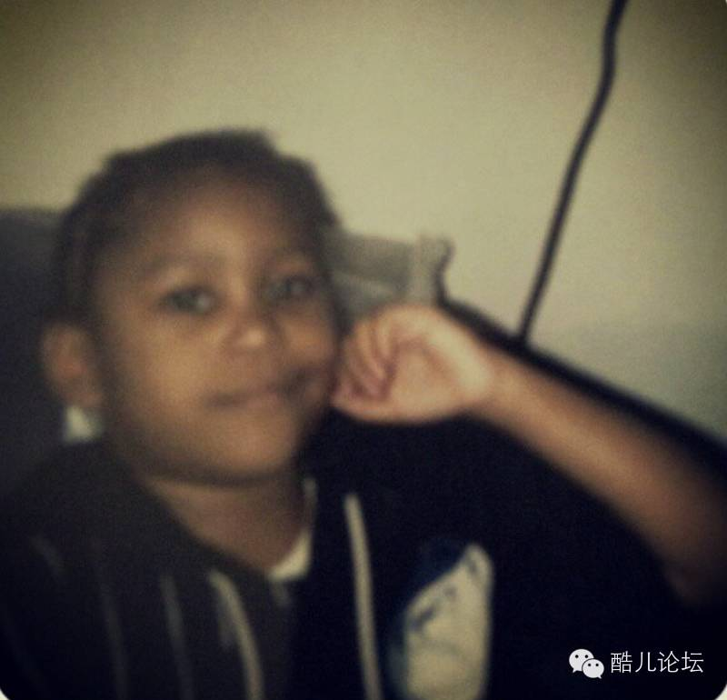

同声传译|1987年我可以作证A man child was born
小编感言： 这是一个来自跨性别者的自述，主人公经历了从迷茫到直面自己的跨性别者身份。直到迈出了最后一步，这是需要莫大勇气的，值得我们为之骄傲。就像主人公自己说的：我可以作证！ |
这是一个关于我如何成长为现在的我的故事。从我出生的时候开始说起吧。我的母亲，当时已经有两个孩子了，还想要再生一个。产前所有的检查都很正常，我很健康，在子宫里和所有正常的婴儿一样生长着。然后，到了揭晓性别的时候了。医生告诉我妈说这是个男孩。那时候是1987年，当时的科技远没有现在的发达。家长们现在可以拿到3D的超声波图，但是1987年的时候不是这样的。不管怎么样，医生就是告诉她我是个男孩。其实她想要的是一个女孩，如果我是女孩的话她就会带我回家，如果不是我就要被赶出家门自己谋生。这当然是开玩笑的啦，但是在我成长的过程中我妈妈很喜欢和我讲这个故事。我也很喜欢听这个故事，这个故事到今天还对我有着重大的意义。为什么呢？我妈的预产期是12月5日，但我直到12号才被生下来。当时医生拍着我的屁股和我妈说“是个女孩！”等等，怎么回事？怎么会这样？你原来不是说是个男孩的吗？可是，这是1987年的事啦，这种错误在当时很常见的。
被医生叫做女孩子之后，我就有了一个女孩子的名字，穿着美美的女孩子的衣服，做着所有一切女孩子的事，但其实我不是女孩子。我应该是医生一开始说的那样，是个男孩。不管是不是仪器出了鼓掌，我就是个男孩子。我早就知道这件事了。我第一次有心动的感觉是在幼儿园的时候，对方是个女生。她和我不一个班，我只是碰巧在拍毕业照的时候看到了她。从这时起，我意识到男孩和女孩是不一样的。我知道自己是个男孩子，我只是刚刚认识到这一点，我还没有长开呢。我还记得有一次我把两个表妹带到房子后面，给她们看我的阴蒂。我和她们说这里很快就会和其他男孩子一样长成阴茎的。这种事当然没有发生，并且我的家人和周围的人都越来越把我当一个女生来对待。他们甚至一次次告诉我我是个女孩子。这让我很迷惑。最后我还是接受了我是个女生的事实，但是每天晚上都坚信第二天醒来我就会变成男孩了。就像那个年纪的孩子们坚信圣诞老人、复活节兔子和牙仙子的存在一样。但是这种事也是不可能发生的。我慢慢长大，变得和其他女孩子一样。讨厌，我的乳房开始膨大！讨厌，我的臀部开始变大！最最讨厌的是，我开始来月经了！所有的生理现象都说明了我是一个女生，但是我知道我不是。我质疑这一点但是我不知道该怎么做。
无论如何，我还是喜欢女人，这使得我开始确认自己是一个女同性恋者。但这对我来说还是不够。我成长在社交媒体刚出现的那段时间。我们有各种各样的聊天室和个人主页。我会上那些网站，并同时拥有两个账号。一个我自己平时用，和我的朋友们聊天。另外一个我假装是一个男人，用来和女生们聊天。没错，我就是最早的那些“网骗”。有时候我们会到线下打电话聊天。我尽自己所能掩饰自己的声音。这给了我极大的快感和兴奋感，但是最终我还是感觉很沮丧因为我终究不是像我假扮的那样的一个男生，至少生理上不是。这种沮丧的感觉一直萦绕着我并且愈演愈烈。我开始上大学后，为了确认一些问题，一直想要加入一个类似兄弟会的组织。我怎么可能一直做那个所有人心目中的那个乖乖女呢？我一直到2009年搬到休斯顿才开始思考我是一个跨性别者这个问题。我开始就这个问题做一些研究调查。因为我是学电影的，我开始写关于一个跨性别者想要和他的母亲和好的剧本（顺便提一句，现在还在写）。我以此为契机认识了好几位跨性别者，并询问了他们的经历而完全没有表现我对于变性手术的好奇。虽然那之后我也没有去做。我不知道要和谁说或是去哪里。沮丧的感觉越来越强烈，我开始认真的思考我到底是不是跨性别者。从2012年开始我用运动内衣和带子裹胸。这时候我开始在脸上画胡子来试验我如果是个男人会长什么样。在我很多次承受不了那种压抑的感觉的时候我会这么做。这是我模仿过程的一步。
然后到2013年我才真正对自己说出跨性别这个词。我向一个同事坦白我可能是一个跨性别者。但是我依旧没有采取行动。在这一点上我思想斗争了很久。这对我来说意味着什么？这对我的家人和朋友们又意味着什么？在2014年终于发生了一些事。我开始不让任何东西束缚自己。我定下目标并努力按着计划走。我去了位于田纳西州的Bonnaroo音乐节，这简直是我最自由的一次经历啦。我一个人去的，坐廉价巴士到亚特兰大又从那里搭便车一直到目的地。在农场野营了四天，和优秀的陌生人们一起享受着超棒的音乐。等我回到休斯顿，我决定我要享受生活，按我自己的想法生活。我给一个很要好的朋友打了电话，告诉她我是跨性别者并且想要知道如何做变性手术。她给了我一些资源，之后的一起都从这开始不同。我第一次预约了那年十月去做血液检查，之后在2015年我开始服用睾丸素也开始工作。二月份的时候，我填了改名的请愿书，并且在三月的时候彻底完成。
现在我终于成为了我一直以来心目中的那个男人。每次看到镜子中的自己，我都感觉重生了一样自由。甚至偶尔我质疑自己的决定的时候，我会回想那个被误解的五岁小男孩，不管世界怎么看待他，他都能不顾所有的质疑坚持自己的性别。1987年12月12日，一个小男孩出生了，我可以作证。
原文如下：
This story is how I came to be the person I am today. It starts just before I was born. My mother, already a mother of two, is expecting another baby. All of her check ups go well, I’m doing fine, growing inside the womb as any average baby should. Then, it’s time for the gender reveal. The doctor informs my mother that she is going to have a baby boy. Now this is 1987 and the technology is not as it is today. Parents can now get 3D sonograms, but not back in 1987. Still, my mother’s doctor told her I was a boy. She bet this man that I was a girl. If I was a girl she’d take me home and if I was a not I had to go live with him and his wife. A joke of course but a story my mother loved to tell me when I was growing up. A story I loved to hear and one that still means so much to me today. Why? Well I was due on December 5th but didn’t make my arrival until the 12th and when the doctor smacked my butt he told my mother, "It’s a girl!" Wait, what? How could this be? You said a man child was to be born. Again, this is 1987 and this type of error was common. Oops!
So being declared a girl, I’m given a feminine name, dressed up pretty like girls are and everything else that comes with being a girl, except I wasn’t a girl. I was born the boy the doctor said I was. Machine error or not, I was that boy. I knew this early on. My first crush was in kindergarten on a girl that wasn’t even in my class, I just happen to see her on picture day. Around this time, I noticed that boys and girls were different. I knew I was a boy I just figured I hadn’t completely developed yet. I remember one time I took two of my girl cousins behind the townhouse we lived in and showed them my clit. I told then that it would soon grow into a penis like all the other boys. That never happened and it became increasingly clear that my family and everyone else were treating me like a girl. Even being told that I was a girl. This was very confusing. So I accepted that I was a girl while believing each night that I could somehow wake up a boy. Believing in the same way kids at that age believe in Santa Clause, the Easter Bunny and the Tooth Fairy. But that never happened. I began to grow older and develop as girls do. I got breasts, hated it! My hips widened, hated it! Got my period, hated that the most! Everything biological was showing examples of me being a girl but I knew different. I questioned it but didn’t know what to do about it.
Still, I was attracted to women which made me begin to identify as a masculine lesbian. This still wasn’t enough for me. I grew up during the beginning of the social media age. We had chat rooms, chat lines, Myspace and Blackplanet. I would go on these sites and have two profiles. One as myself for me to contact all my friends and one for me to pose as a boy. On that profile I would talk to girls as the boy that I wanted to be. That’s right, I’m one of the original catfish. Sometimes the conversations would take place offline over the phone. I disguised my voice as best I could. This gave me such a sense of joy an excitement but eventually it left me depressed because I wasn’t that boy I portrayed myself as, at least not physically. This depression continued and it only got worse. I went off to college and I’ve always wanted to pledge a fraternity, the Ques to be exact. How could I possible do that being the girl everyone perceived me as?
It wasn’t until I had moved to Houston in 2009 that I began to think I was transgender. I began to research the topic. Since I was a film student I began working on a script about a transgender guy trying to reconnect with his mother(still working on it by the way). I used this as a front to contact several transmen and ask them about their experiences without sharing my own curiosity about transitioning. Even then I didn’t do it. I didn’t know who to talk to or where to go. The depression became more severe and I really began to question myself as to if I was transgender. It was in 2012 when I began to bind my breasts with sports bras and a girdle. At this time I also began to experiment with drawing facial hair on my face to see how I would like as a guy. A lot of the times I did it was when the depression seemed unbearable. It was one of the coping mechanisms I had.
Then in 2013 I actually said the word "transgender" in regards to myself. I confessed to a coworker that I think I maybe trans. Still, I did not take action. I battled with myself on the issue. What would that mean for me? What would that mean for my family and friends? In 2014 something happened. I began to just free myself of everything. I set goals and followed through. I went to the Bonnaroo music festival in Tennessee and it was the most liberating experience I ever had. I went alone, catching the MegaBus to Atlanta and hitchhiked a ride from there the rest of the way, camped on the farm for 4 days and enjoyed great music with awesome strangers. When I got back to Houston I decided I would really enjoy my life and live on my terms. I called a good friend of mine and told her I was transgender and wanted to know how to begin my transition. She provided me with some resources and that’s where it started. I had my first appointment October that year to have my bloodwork done then in January 2015 I started testosterone and came out at work. In February I filed my petition for my name change and had it granted in March.
Now I’m becoming the man I always felt like. Each time I look at my reflection I feel renewed and free. And even though I sometimes question my decision I think back to that misunderstood little 5 year old boy that knew beyond a doubt what his gender was despite what the world saw him as. December 12, 1987 a man child was born and I am proof of that.
Xavier C.Branch